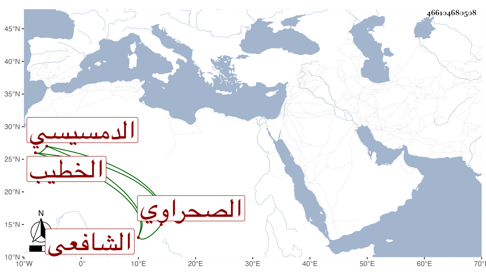

0902Sakhawi.DawLamic.ITO20230111-ara1.EIS1600.466104680508
Biography ID: 466104680508
541
محمد بن علي بن محمد بن محمد بن أحمد بن أبي الرجاء الشمس الدمسيسي ثم الصحراوي الشافعي الخطيب والد يحيى وابن أخي الفقيه أحمد الدمسيسي ويعرف بين أهل بلاده بابن قطب ، قرأ القرآن واشتغل قديما وتميز في الفضائل وخطب ببلده ثم بالتربة الأشرفية برسباي أول ما فتحت إلى أن مات واقفها . وكان بديع القراءة والخطابة يصدع بهما القلوب النيرة مع الخط المأنوس المجود والنظم بحيث مدح شيخنا وغيره وشرع في تخميس الوفاة النبوية وكذا امتدح ابن الديري بقصيدة قرأتها بخطه أولها :
| فاح عبير المدح فاستنشق | أوصاف سعد صاح واسترفق |
| قاضي القضاة الديري من قد نشا | ما الدير في زي به مشرق |
| فيا له من بلد اسمه | من سعده أشرق بالمشرق |
| فالمدح يمتاز بأوصافه | كما به مداحه ترتقي |
إلى آخرها . مات في سنة خمس وستين تقريبا رحمه الله .
